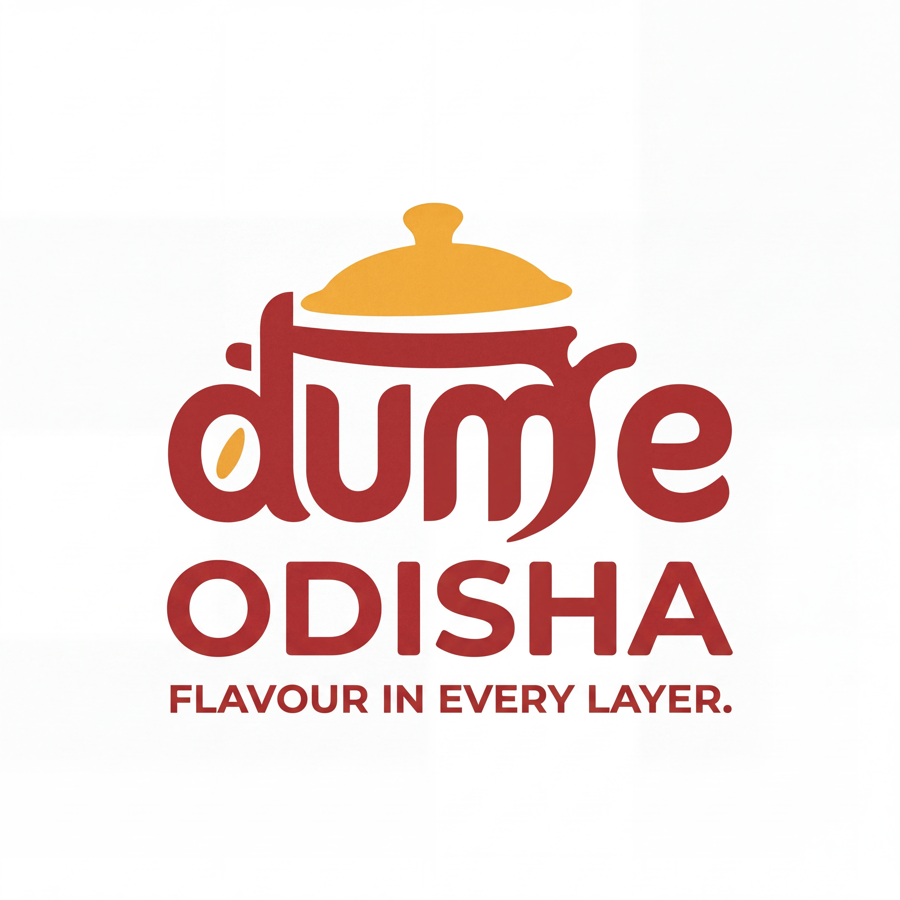

The name comes first.
The previous logo made Biryani look like the brand and Odisha look like a location. The correction makes Dum E Odisha the complete name and treats biryani as the offering.
Before — superseded name hierarchy

After — corrected full name

Findings and fixes
The scope is an evolution of the selected mark, not a new logo concept. Findings below are based on the saved artwork, guides and the user’s confirmed name. No direct-competitor score has been manufactured.
| Area | Finding | Correction | Status / limit |
|---|---|---|---|
| Creative direction | The warm cooking-lid idea fitted the brief, but its intent was spread across competing studies. | Keep the chosen wordmark and define the emotional target as welcoming and appetising. | Documented; a full founder strategy workshop has not been conducted. |
| Colour | Three multi-colour routes and several single-colour studies were presented without a stable everyday palette. | Use two logo inks: chilli for letters and saffron for lid/rice. Keep dark neutrals for supporting copy. | Targets specified; generated pixels are approximate. |
| Logo | BIRYANI was the large second line and ODISHA was a tiny location label. That represented the wrong brand. | Remove BIRYANI from the logo; make ODISHA a prominent part of Dum E Odisha. Add a separate tagline version. | Corrected name and tagline checked visually in the delivered images. |
| Pattern and texture | No consistent graphic device existed; adding decorative motifs would introduce noise. | Use clean fields and the selected lid/rice idea. Do not invent folk patterns, extra spices or texture. | Deliberate restraint; no separate pattern library is delivered. |
| Typography and layout | The name hierarchy was wrong; the guide read mainly as an equal-weight card gallery. | Prioritise the complete name, then tagline. Use measured rule panels, a table of contents and actual supporting type samples. | Guide rebuilt; generated logo lettering is not a named or licensed typeface. |
| Graphics | Only isolated logo renders were available; applications did not demonstrate the correct name. | Provide a compact identity canvas with food-container and carry-bag studies. | Illustrative proof of use, not production packaging artwork. |
| Icons | The full wordmark cannot be read as a 16 px favicon. The first new profile attempt added an unrequested pepper. | Reject the drift; reuse the cleaned tagline-free core file for the profile. Do not claim a 16 px icon. | Small favicon remains out of scope; profile requires actual-size checking. |
| Application | Earlier assets carried the wrong name into every touchpoint. | Only corrected Dum E Odisha files are linked in the current download. Older names are labelled superseded in history. | Current asset links and package contents validated. |
| Style guide | Old and current studies coexisted without enough separation between rules, proposals and history. | Create one current guide, linked audit and clearly labelled archive. Record fixed colour roles, naming, voice and delivery limits. | Current content and file references checked; historical source images retained. |
Simple, appropriate, distinct
Simple — partial
The lid and rounded letters remain readable in black and white at larger display sizes. The complete name and tagline do not work as a 16 px icon. The full-name assets should not be squeezed into a favicon.
Appropriate — supported by the brief
Rounded lettering, a cooking-lid cue and warm food colours answer the request for a warm, modern, illustrative biryani identity. The guide does not invent a royal origin or an Odia recipe claim.
Distinct — unverified
No confirmed list of direct local competitors was supplied. The cooking-lid motif is category-familiar, so uniqueness cannot be claimed from this audit alone.
Category context reviewed
Biryani Blues emphasises dum cooking and Hyderabadi identity; Behrouz uses a royal narrative; Biryani By Kilo foregrounds dum-cooked handi biryani. These are category references, not a user-confirmed local competitor set. A pot, warm colours and the word dum are category cues rather than proof of ownership.
How all eight supplied sources were applied
| Source | Principle used | Application here |
|---|---|---|
| Rampstack logo design | Separate primary, compact and monochrome uses; keep one clear wordmark idea. | Named variants and application rules replace a set of equally ranked colour experiments. |
| zstvns design skills | Assess Simple, Appropriate and Distinct in context; keep fixed core and flexible use separate. | Full-name hierarchy repaired; distinctiveness remains unscored without a confirmed direct competitor set. |
| Magnus919 brand designer | Document strategy, visual identity, voice, usage and inventory together. | One identity record, named asset manifest and an explicit current-versus-history split. |
| Ziguishian brand design | Preserve the selected image source and show usable logo specifications. | Nano Banana reference-based refinement; clear-space, positive/negative, small-use and application panels. |
| Atypica logo design | Analyse letter hierarchy, spacing, restrained colours and monochrome usability. | ODISHA promoted into the main name; generated letters checked visually; two logo inks selected. |
| SanbaoAI logo generator | Preserve silhouette when recolouring and prove the identity in relevant scenarios. | Colour roles tied to the lid and lettering; a food-packaging presentation instead of unrelated mockups. Mascot route reviewed and excluded because the selected mark is typographic. |
| rknall SVG logo designer | Plan lockups, backgrounds, clear space and organised delivery. | Usage variants and file organisation applied; SVG construction not used because the user requested Nano Banana only. |
| Anthropic canvas design | Begin with a visual philosophy; make hierarchy, space and colour carry the composition. | Shared Warmth philosophy and a visual identity canvas with restrained text. Rendering remains Nano Banana-generated, following the user’s tool choice. |
The skills contain conflicting defaults: SVG delivery versus image-only work; no tagline in a core lockup versus the user’s request for a tagline. The user’s instructions take precedence. New visuals use Nano Banana only, and both core and tagline versions are supplied. This is a revision of an already selected direction and existing guide, not a restarted discovery process or a new candidate approval.
What the previous guide overclaimed or left unclear
Its repeated card layouts gave every colour study equal weight. Its proposed minimum sizes were not production tests. The new guide names one two-ink primary treatment, explains the tagline-free option, and labels generated imagery, approximate colour and unverified tiny-size behaviour.
The generated avatar that added an unrequested pepper was rejected. A tagline-removal attempt left faint remnants, and later attempts repeated the tagline. A Pro image edit produced a clean core file. Failed attempts are excluded from the current set; the same clean core is used for profile placement rather than another redrawn version.
Generated copies can still differ slightly in curves and colour. They are raster artwork, not a certified vector master, exact Pantone reference, trademark clearance or a finished packaging dieline.